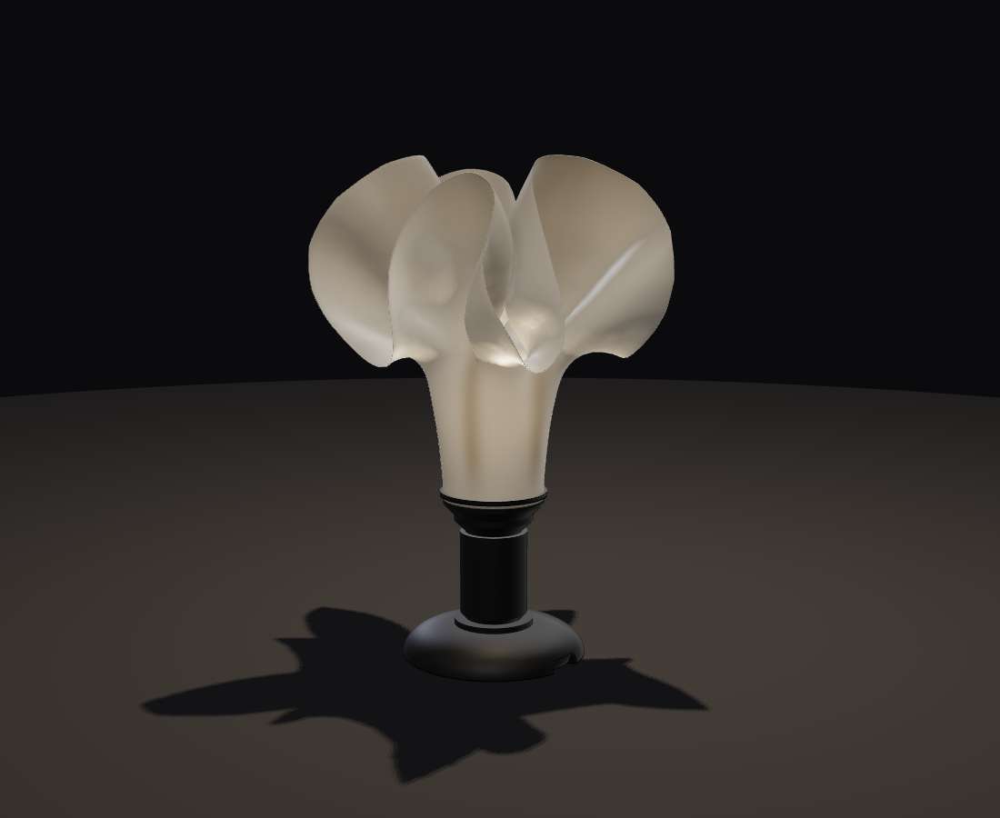
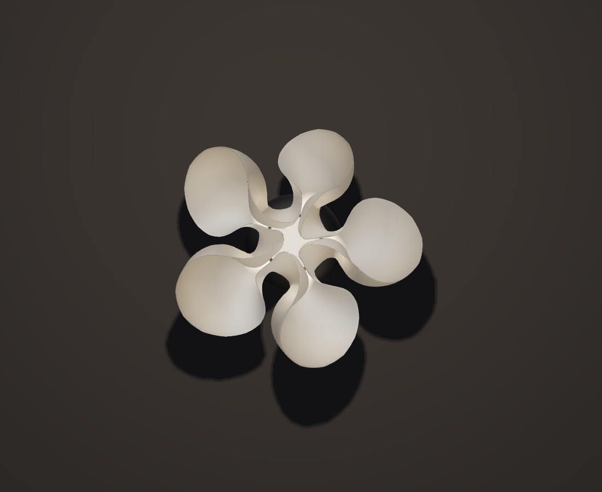
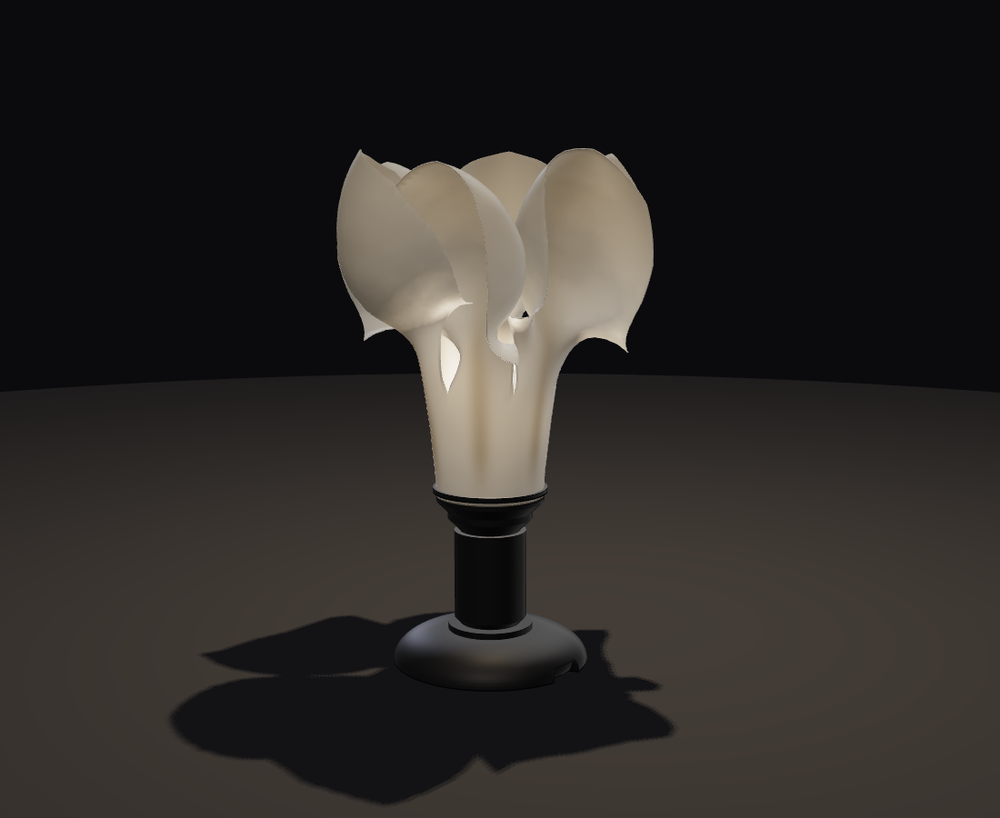
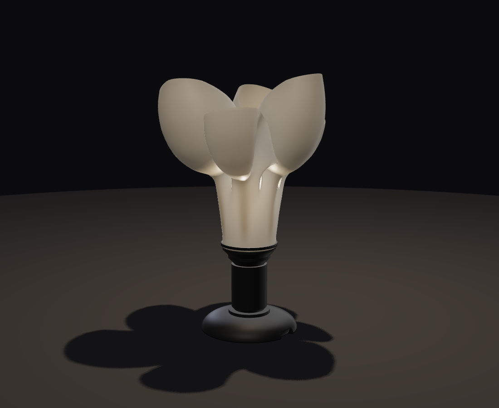
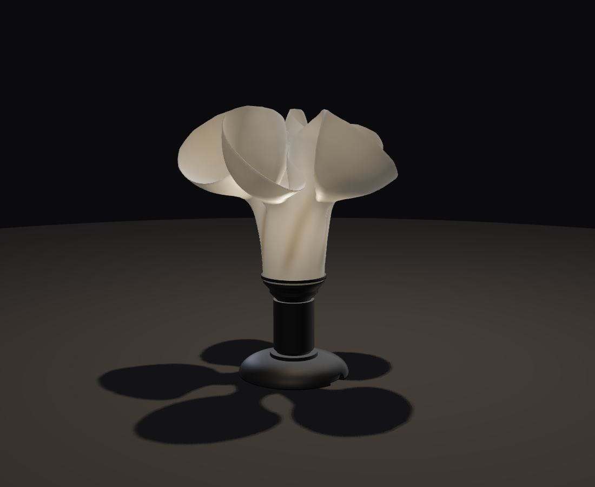
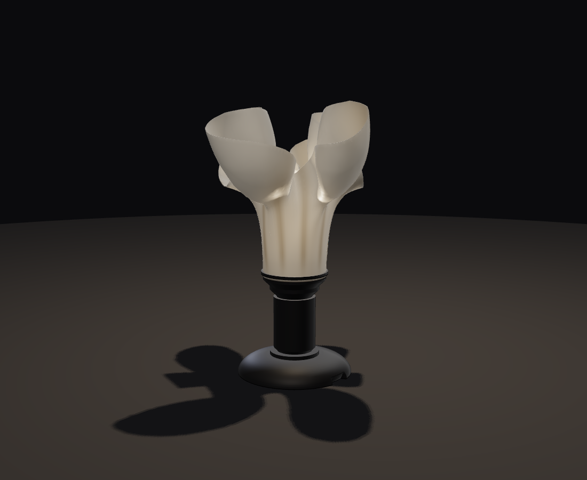

Engineering case study · Computational geometry
Flower lampshades, grown to print
A deterministic geometry pipeline that grows elastic shells, validates topology and print constraints, and exports five shades against one frozen mechanical interface.



The engineering target is a family of non-radial shades that share one physical interface, print Z-up without supports, and rebuild identically from the same specification. A mesh that renders successfully is only an intermediate result.
Each shade starts as a triangulated elastic shell pinned at a Ø68 throat. Differential growth changes edge rest lengths; curl changes signed hinge rest angles; stretch, bend and collision constraints are projected until the sheet settles. Flower geometry emerges from the rest state rather than from forces that push vertices toward a target shape.
The preview and exporter call the same generator. Export is gated by topology, build-volume, overhang, interface and determinism checks, so an invalid simulation cannot quietly become a printable-looking STL.
From renderer to printer
The browser renderer runs the same generator as the build pipeline. Select a specification, adjust its independent shape controls and inspect the measured envelope, wall, overhang and topology report. The shade download remains disabled until the generated mesh passes the export gate.
For a repeatable first print, the validated print pack contains the exact ten STL files produced by the current passing build: five shades, four lamp parts and a fit coupon, plus the manifest and slicer instructions. Start with the coupon, then test the collar and ring against the actual E27 holder before spending seven to fifteen hours on a shade.
Differential growth is the geometry primitive
The input is a seed mesh plus fields over material coordinates. A growth field scales edge rest lengths near the margin; bending stiffness sets the fold wavelength; signed rest curvature controls reflexed tips; collision constraints prevent self-penetration. The solver finds the deformed position field.
-
01
Evaluate material fields
Petal bands, anisotropy, patchiness, veins and twist are functions of each vertex’s seed coordinates, which survive subdivision.
-
02
Project constraints
Position-based dynamics resolves stretch, signed hinge bending and collision constraints against the grown rest state.
-
03
Audit the mesh
The final shell is analysed in print orientation: millimetres, Z up, flange at z=0. Only a passing mesh reaches binary STL serialization.
Five specifications, five constraint sets
The catalogue runs through one shell pipeline. Each specification selects a different combination of topology, rest-length field, hinge memory, stiffness and print profile.



An STL is a build artifact, not evidence of printability. The validation gate decides whether that artifact is allowed to exist.
Validation gates the export pipeline
Closed, oriented manifold
Every mesh edge must belong to exactly two faces, used in opposite directions. A boundary or flipped face stops the build.
Limit derived from the profile
The allowable angle is computed from bead width, overlap and layer height. Morning Glory buys 74° with 0.10 mm layers.
Frozen assembly geometry
Every shade starts at the same Ø68 throat, clears the PETAL-56 clamp and presents the same 1.6 mm flange.
Same specification, same STL
The solver owns a seeded PRNG. Wall-clock time and ambient randomness never enter geometry generation.
| Shade | Envelope Ø × H | Material | Print time |
|---|---|---|---|
| Datura | 224 × 225 mm | ~135 g | ~12 h 37 m |
| Camellia | 207 × 214 mm | ~125 g | ~11 h 41 m |
| Lily | 200 × 214 mm | ~129 g | ~12 h 02 m |
| Morning Glory | 233 × 188 mm | ~107 g | ~15 h 03 m |
| Poppy | 225 × 184 mm | ~81 g | ~7 h 32 m |
Estimates come from generated path length and the declared print profiles. They are not measurements from completed prints.
Frozen mechanical interfaces
The assembly contract is deliberately small. Five printed parts meet a bought E27 lampholder, LED bulb and certified cord set through two support-free trapezoidal threads: KNUCKLE-40 for the structural spine and PETAL-56 for the shade clamp.
The thin shell carries no thread. It terminates in a solid 1.6 mm flange that drops over the collar and is retained by a separate ring. Shade generation can change radically while the collar, stem and base remain compatible.
- Shadegrown translucent shell
- RingPETAL-56 clamp
- CollarE27 holder cup
- StemKNUCKLE-40 module
- Basehollow for ballast
Verification boundary
The software checks are real. The current catalogue builds deterministically, produces watertight meshes, fits the declared 250 × 250 × 250 mm volume, and stays within its measured steep-area budget.
Nothing has been physically printed yet. Dimensions that touch bought hardware—the E27 holder body, M10×1 nipple and cord—come from catalogue figures rather than a part measured in hand. The first physical job is a ten-millimetre thread coupon, followed by the collar and ring, before committing to a shade.
Ideas the project builds on
Printed flowers, threaded parts and modular repair as the starting point.
Simulation Discrete Shells ↗Stretch on edges and bending around hinges, measured against a rest state.
Growth Floraform ↗Changing an elastic sheet’s rest metric and letting buckling produce the form.